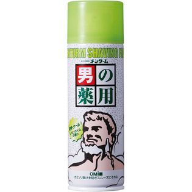

返回列表
产品名称：メンターム 薬用シェービングフォーム（レモンライム）

近江兄弟社 メンターム 薬用シェービングフォーム（レモンライム） １８０ｇ（医薬部外品）
メーカー 近江兄弟社
JANコード 4987036493470
商品の特徴
カミソリ負けを防ぎスムーズにそれる
- 成分・分量
- ＜成分＞
イソプロピルメチルフェノール、塩酸ピリドキシン、ジフェンヒドラミン、dL-メントール、セタノール
- 用法及び用量
- ＜使用方法＞
缶をよく振り、ひげをお湯又は水でしめらせ、ひげ全体につけて下さい。ひげ剃り後は水で洗い流して下さい。